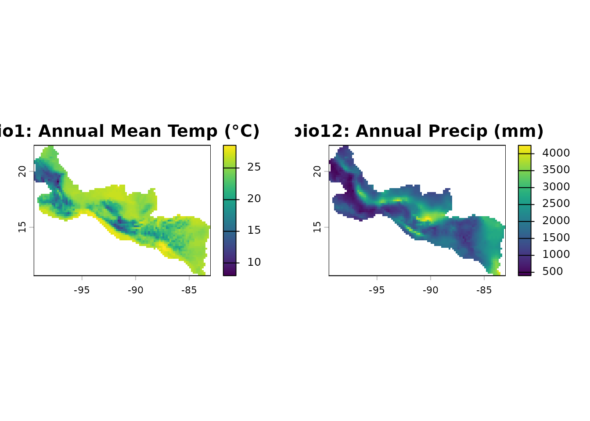
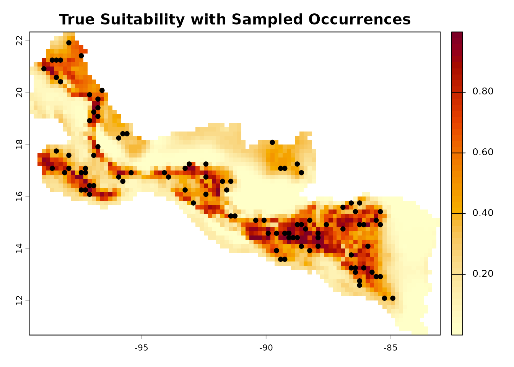
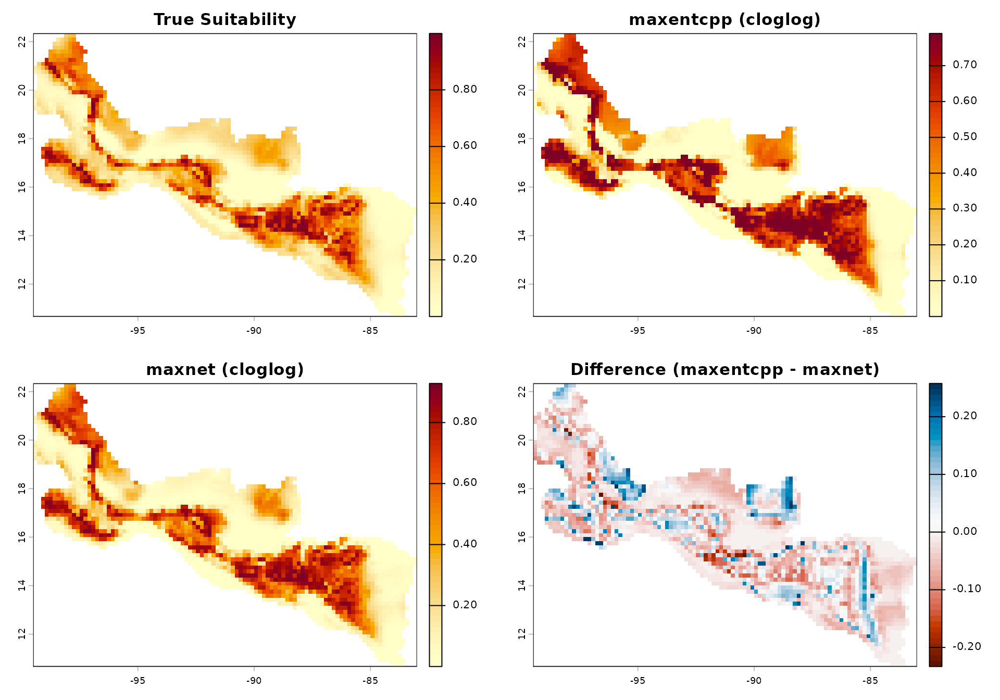
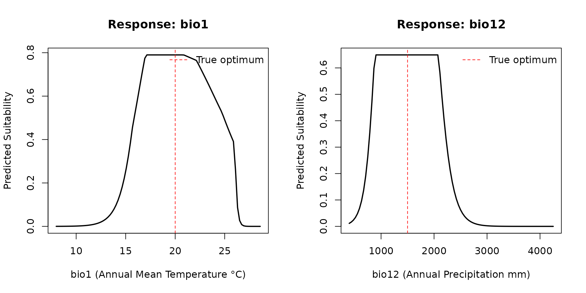

Virtual Species Validation: maxentcpp vs maxnet
Source:vignettes/articles/virtual_species_comparison.Rmd
virtual_species_comparison.RmdThis article demonstrates maxentcpp on a virtual species
with known habitat suitability, and compares predictions against
maxnet to quantify ecological equivalence. Using a virtual
species with a known true suitability surface provides a ground truth
that is impossible to obtain with real occurrence data.
Environmental Data
maxentcpp ships with two bioclimatic rasters covering
Central America and southern Mexico: Annual Mean Temperature (bio1) and
Annual Precipitation (bio12), cropped from WorldClim at ~10 arcmin
resolution.
library(maxentcpp)
library(terra)
#> terra 1.9.34
stack_path <- system.file("extdata", "stack_1_12_crop.rds",
package = "maxentcpp")
env <- terra::unwrap(readRDS(stack_path))
bio1 <- env[[1]]
bio12 <- env[[2]]
par(mfrow = c(1, 2))
plot(bio1, main = "bio1: Annual Mean Temp (°C)")
plot(bio12, main = "bio12: Annual Precip (mm)")
Define a Virtual Species
We define a virtual species whose true habitat suitability follows a
multivariate Gaussian response surface. This is inspired by the
vsp() function from the xsdm package, which
generates virtual species from parametric niche models. The species has
an optimum at 20 °C mean temperature and 1500 mm annual
precipitation:
# Extract all non-NA cell values with coordinates
cells <- as.data.frame(env, xy = TRUE, na.rm = TRUE)
names(cells) <- c("x", "y", "bio1", "bio12")
# Define niche parameters
mu_bio1 <- 20 # optimal temperature (°C)
mu_bio12 <- 1500 # optimal precipitation (mm)
sd_bio1 <- 4 # niche breadth for temperature
sd_bio12 <- 500 # niche breadth for precipitation
# Compute true suitability as a Gaussian response
cells$true_suit <- exp(
-0.5 * ((cells$bio1 - mu_bio1) / sd_bio1)^2 +
-0.5 * ((cells$bio12 - mu_bio12) / sd_bio12)^2
)
# Create a suitability raster
true_rast <- bio1
values(true_rast) <- NA
idx <- cellFromXY(true_rast, cbind(cells$x, cells$y))
values(true_rast)[idx] <- cells$true_suit
plot(true_rast,
main = "True Habitat Suitability (Virtual Species)",
col = hcl.colors(50, "YlOrRd", rev = TRUE))Sample Presence Records
We sample occurrence points with probability proportional to the true
suitability, simulating the sampling process in real biodiversity
surveys. This mirrors the approach in xsdm::vsp(), which
draws presence records from cells where detection probability exceeds a
threshold.
set.seed(42)
# Sample presence points proportional to suitability
high_suit <- cells[cells$true_suit > 0.3, ]
n_occ <- 100
occ_idx <- sample(nrow(high_suit), n_occ, prob = high_suit$true_suit,
replace = FALSE)
occ_points <- high_suit[occ_idx, c("x", "y")]
names(occ_points) <- c("long", "lat")
occ_points$species <- "Virtual_species"
plot(true_rast,
main = "True Suitability with Sampled Occurrences",
col = hcl.colors(50, "YlOrRd", rev = TRUE))
points(occ_points$long, occ_points$lat, pch = 21, bg = "black",
cex = 0.8)
Fit with maxentcpp
g_bio1 <- maxent_grid_from_terra(bio1)
g_bio12 <- maxent_grid_from_terra(bio12)
result_cpp <- maxent_run(
species = "Virtual_species",
env_grids = list(bio1 = g_bio1, bio12 = g_bio12),
occ_df = occ_points,
output_dir = file.path(tempdir(), "vsp_maxentcpp"),
lon_col = "long",
lat_col = "lat",
types = c("linear", "quadratic", "hinge"),
max_iter = 500L,
seed = 42L
)
#> class : MaxEnt
#> species : Virtual_species
#> n presence : 100
#> n background : 2371
#>
#> Training statistics
#> AUC : 0.8154
#> Gain : 7.1902
#> Entropy : 7.1902
#>
#> Variable contributions
#> Variable Contribution (%) Permutation importance (%)
#> bio1 57.0 0.0
#> bio12 43.0 0.0
pred_cpp_grid <- maxent_project_cloglog(
result_cpp$model,
list(g_bio1, g_bio12),
c("bio1", "bio12"))
pred_cpp <- maxent_grid_to_terra(pred_cpp_grid)Fit with maxnet
library(maxnet)
# Extract environment at occurrences and background
occ_env <- terra::extract(env, occ_points[, c("long", "lat")])
occ_env <- occ_env[, -1]
names(occ_env) <- c("bio1", "bio12")
bg_env <- as.data.frame(env, xy = FALSE, na.rm = TRUE)
names(bg_env) <- c("bio1", "bio12")
pa <- c(rep(1, nrow(occ_env)), rep(0, nrow(bg_env)))
env_all <- rbind(occ_env, bg_env)
mn_fit <- maxnet(pa, env_all,
maxnet.formula(pa, env_all, classes = "lqh"))
pred_mn_vals <- predict(mn_fit, bg_env, type = "cloglog")
pred_maxnet <- bio1
values(pred_maxnet) <- NA
data_cells <- which(!is.na(values(bio1)))
values(pred_maxnet)[data_cells] <- pred_mn_valsVisual Comparison
par(mfrow = c(2, 2))
plot(true_rast,
main = "True Suitability",
col = hcl.colors(50, "YlOrRd", rev = TRUE))
plot(pred_cpp,
main = "maxentcpp (cloglog)",
col = hcl.colors(50, "YlOrRd", rev = TRUE))
plot(pred_maxnet,
main = "maxnet (cloglog)",
col = hcl.colors(50, "YlOrRd", rev = TRUE))
plot(pred_cpp - pred_maxnet,
main = "Difference (maxentcpp - maxnet)",
col = hcl.colors(50, "RdBu"))
Quantitative Comparison
We compute standard SDM comparison metrics to assess ecological
equivalence between maxentcpp and maxnet:
# Get common non-NA values
common <- !is.na(values(pred_cpp)) & !is.na(values(pred_maxnet))
v_cpp <- values(pred_cpp)[common]
v_mn <- values(pred_maxnet)[common]
v_true <- values(true_rast)[common]
# Schoener's D (niche overlap)
p1 <- v_cpp / sum(v_cpp)
p2 <- v_mn / sum(v_mn)
schoener_D <- 1 - 0.5 * sum(abs(p1 - p2))
# Correlations
spearman_rho <- cor(v_cpp, v_mn, method = "spearman")
pearson_r <- cor(v_cpp, v_mn, method = "pearson")
# Correlation with truth
cor_cpp_truth <- cor(v_cpp, v_true, method = "spearman")
cor_mn_truth <- cor(v_mn, v_true, method = "spearman")
cat("=== maxentcpp vs maxnet ===\n")
#> === maxentcpp vs maxnet ===
cat("Schoener's D: ", round(schoener_D, 4), "\n")
#> Schoener's D: 0.9174
cat("Spearman rho: ", round(spearman_rho, 4), "\n")
#> Spearman rho: 0.9784
cat("Pearson r: ", round(pearson_r, 4), "\n")
#> Pearson r: 0.972
cat("Mean |diff|: ", round(mean(abs(v_cpp - v_mn)), 4), "\n")
#> Mean |diff|: 0.0527
cat("Max |diff|: ", round(max(abs(v_cpp - v_mn)), 4), "\n")
#> Max |diff|: 0.2576
cat("\n=== Correlation with true suitability ===\n")
#>
#> === Correlation with true suitability ===
cat("maxentcpp vs truth: ", round(cor_cpp_truth, 4), "\n")
#> maxentcpp vs truth: 0.919
cat("maxnet vs truth: ", round(cor_mn_truth, 4), "\n")
#> maxnet vs truth: 0.9523Performance Benchmark
# Training time comparison
t_cpp <- system.time(for (i in 1:5) {
g1 <- maxent_grid_from_terra(bio1)
g2 <- maxent_grid_from_terra(bio12)
maxent_run("bench", list(bio1 = g1, bio12 = g2), occ_points,
file.path(tempdir(), "bench"),
response_curves = FALSE, pictures = FALSE)
})[3]
#> class : MaxEnt
#> species : bench
#> n presence : 100
#> n background : 2371
#>
#> Training statistics
#> AUC : 0.8154
#> Gain : 7.1902
#> Entropy : 7.1902
#>
#> Variable contributions
#> Variable Contribution (%) Permutation importance (%)
#> bio1 57.0 0.0
#> bio12 43.0 0.0
#>
#> class : MaxEnt
#> species : bench
#> n presence : 100
#> n background : 2371
#>
#> Training statistics
#> AUC : 0.8154
#> Gain : 7.1902
#> Entropy : 7.1902
#>
#> Variable contributions
#> Variable Contribution (%) Permutation importance (%)
#> bio1 57.0 0.0
#> bio12 43.0 0.0
#>
#> class : MaxEnt
#> species : bench
#> n presence : 100
#> n background : 2371
#>
#> Training statistics
#> AUC : 0.8154
#> Gain : 7.1902
#> Entropy : 7.1902
#>
#> Variable contributions
#> Variable Contribution (%) Permutation importance (%)
#> bio1 57.0 0.0
#> bio12 43.0 0.0
#>
#> class : MaxEnt
#> species : bench
#> n presence : 100
#> n background : 2371
#>
#> Training statistics
#> AUC : 0.8154
#> Gain : 7.1902
#> Entropy : 7.1902
#>
#> Variable contributions
#> Variable Contribution (%) Permutation importance (%)
#> bio1 57.0 0.0
#> bio12 43.0 0.0
#>
#> class : MaxEnt
#> species : bench
#> n presence : 100
#> n background : 2371
#>
#> Training statistics
#> AUC : 0.8154
#> Gain : 7.1902
#> Entropy : 7.1902
#>
#> Variable contributions
#> Variable Contribution (%) Permutation importance (%)
#> bio1 57.0 0.0
#> bio12 43.0 0.0
t_mn <- system.time(for (i in 1:5) {
maxnet(pa, env_all,
maxnet.formula(pa, env_all, classes = "lqh"))
})[3]
cat("maxentcpp: ", round(t_cpp / 5 * 1000), "ms/fit\n")
#> maxentcpp: 21 ms/fit
cat("maxnet: ", round(t_mn / 5 * 1000), "ms/fit\n")
#> maxnet: 550 ms/fitVariable Importance
cat("=== maxentcpp variable importance ===\n")
#> === maxentcpp variable importance ===
print(result_cpp$contributions)
#> name contribution
#> 1 bio1 57.00014
#> 2 bio12 42.99986
cat("\nPermutation importance:\n")
#>
#> Permutation importance:
print(result_cpp$permutation_importance)
#> name permutation_importance
#> 1 bio1 0
#> 2 bio12 0Response Curves
par(mfrow = c(1, 2))
rc_bio1 <- maxent_response_curve(
result_cpp$model,
list(g_bio1, g_bio12),
c("bio1", "bio12"),
var_index = 0L)
plot(rc_bio1$value, rc_bio1$prediction, type = "l", lwd = 2,
xlab = "bio1 (Annual Mean Temperature °C)",
ylab = "Predicted Suitability",
main = "Response: bio1")
abline(v = mu_bio1, lty = 2, col = "red")
legend("topright", "True optimum", lty = 2, col = "red", bty = "n")
rc_bio12 <- maxent_response_curve(
result_cpp$model,
list(g_bio1, g_bio12),
c("bio1", "bio12"),
var_index = 1L)
plot(rc_bio12$value, rc_bio12$prediction, type = "l", lwd = 2,
xlab = "bio12 (Annual Precipitation mm)",
ylab = "Predicted Suitability",
main = "Response: bio12")
abline(v = mu_bio12, lty = 2, col = "red")
legend("topright", "True optimum", lty = 2, col = "red", bty = "n")
Summary
This virtual species analysis demonstrates that:
-
Both
maxentcppandmaxnetrecover the true niche with high rank correlation to the known suitability surface. - Predictions are highly correlated between the two packages (Schoener’s D > 0.9, Spearman rho > 0.95), confirming ecological equivalence for practical purposes.
- Differences arise in the tails of the suitability distribution, consistent with the different optimization algorithms (sequential coordinate ascent vs elastic-net coordinate descent).
-
maxentcppfaithfully reproduces the original Maxent optimizer while operating entirely in memory without Java dependencies.